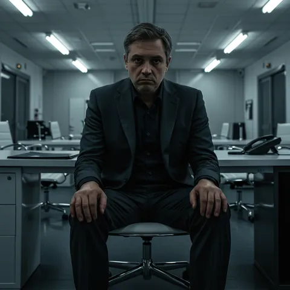

Статья
Эмоциональное выгорание и потеря себя: как вернуть гармонию
 Павел Макарцов, психолог
Павел Макарцов, психолог
В потоке ежедневных забот, ожиданий окружающих и постоянной спешки легко забыть о том, что важно именно вам. Вы вкладываете силы в работу, семью, друзей, но порой настаёт момент, когда в душе остаются лишь усталость, тревога и чувство, что собственные желания остались за кадром.
Причины эмоционального выгорания
Выгорание редко случается внезапно. Чаще оно складывается из множества маленьких решений, когда мы снова и снова откладываем себя «на потом». Обычно за ним стоит то, что человек долгое время:
- следовал чужим ожиданиям и утратил связь с собственными потребностями;
- ставил заботу о других выше своих сил и времени;
- воспринимал отдых как недостаток самоотдачи;
- не мог остановиться хотя бы на мгновение из-за внутреннего чувства вины.
Со временем незаметно стирается грань между вашими целями и тем, что навязано извне, и жизнь превращается в постоянное выполнение чужих сценариев.

Как распознать выгорание
Всемирная организация здравоохранения описывает выгорание как состояние, вызванное хроническим стрессом на работе, с которым не удалось справиться. Его основные признаки:
- Истощение. Усталость не проходит даже после выходных и отпуска, утром тяжело начать день.
- Отстранённость и цинизм. Раздражают люди и задачи, которые раньше были интересны; хочется закрыться от всех.
- Ощущение неэффективности. Кажется, что вы ничего не успеваете и всё делаете плохо, пропадает чувство смысла.
Похожие состояния возникают не только из-за работы, но и при многолетней заботе о близких, в родительстве, при постоянном «режиме спасателя».
Внутренние барьеры на пути к себе
Внутренний критик твердит: проявлять слабость нельзя, а пауза — непозволительная роскошь. Страх показаться уязвимым перед близкими и коллегами заглушает просьбу о помощи, а стремление быть идеальным и «решать проблемы всех вокруг» становится тяжёлым грузом, сковывающим движение вперёд. Под такой бронёй трудно дышать свободно: напряжение растёт, ресурсы истощаются.
«Изменения — это не потеря себя. Это возможность стать тем, кем вы ещё не были».
Практические рекомендации по восстановлению баланса
- Дайте себе право на эмоции. Позвольте себе чувствовать и выражать то, что происходит внутри, без страха осуждения.
- Научитесь устанавливать границы. Говорить «нет» — признак не жёсткости, а уважения к себе.
- Ведите дневник ощущений. Записывайте свои мысли и эмоции — это помогает найти первопричины напряжения и увидеть пути к облегчению.
- Найдите небольшие островки для себя. Даже пять минут тишины, короткая прогулка или чашка любимого напитка могут стать началом перезагрузки.
- Ищите поддержку. Общение с теми, кто понимает вас и разделяет ваши переживания, наполняет силой и снижает давление одиночества.
- Развивайте творческие навыки. Рисование, музыка или письмо помогают выразить эмоции и переключиться с негативных мыслей.
Аудит энергии за неделю
Возьмите лист бумаги и разделите его на две колонки: «забирает силы» и «восполняет силы». Вспомните последние семь дней и запишите в каждую колонку конкретные дела, встречи и разговоры.
Посмотрите на список и выберите одно дело из левой колонки, которое можно сократить, делегировать или перенести, и одно из правой, которому вы осознанно дадите место на следующей неделе.
Когда нужна помощь специалиста
Если усталость, тревога или ощущение пустоты не проходят неделями, если стало трудно справляться с делами и радоваться, — не откладывайте заботу о себе. В доверительном пространстве терапии вы сможете восстановить внутреннюю гармонию, обрести новые силы и вновь почувствовать радость жизни.
Когнитивно-поведенческая терапия помогает заметить убеждения, которые заставляют работать на износ («я должен всё успевать», «отдыхать — стыдно»), и заменить их на более бережные и реалистичные.
Сделайте шаг навстречу своему благополучию — вы этого стоите. Записаться на консультацию
Павел Макарцов
Психолог, магистр психологии (УрФУ), специалист по когнитивно-поведенческой терапии. Помогает при тревоге, выгорании и трудностях в отношениях — онлайн и очно в Екатеринбурге.
Подробнее об авторе